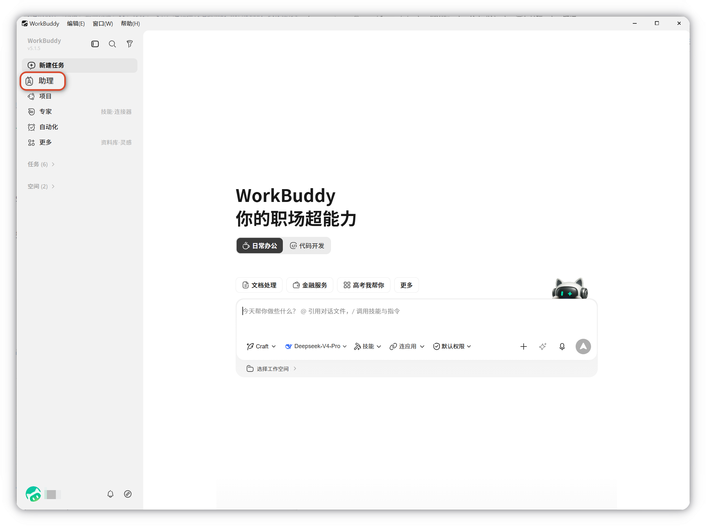
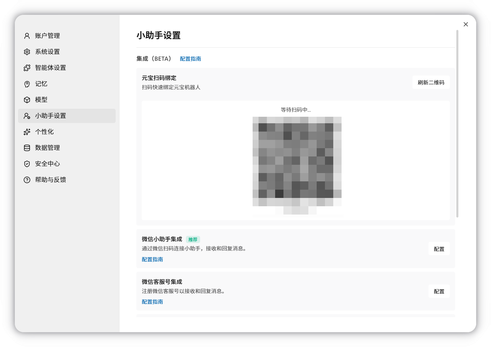
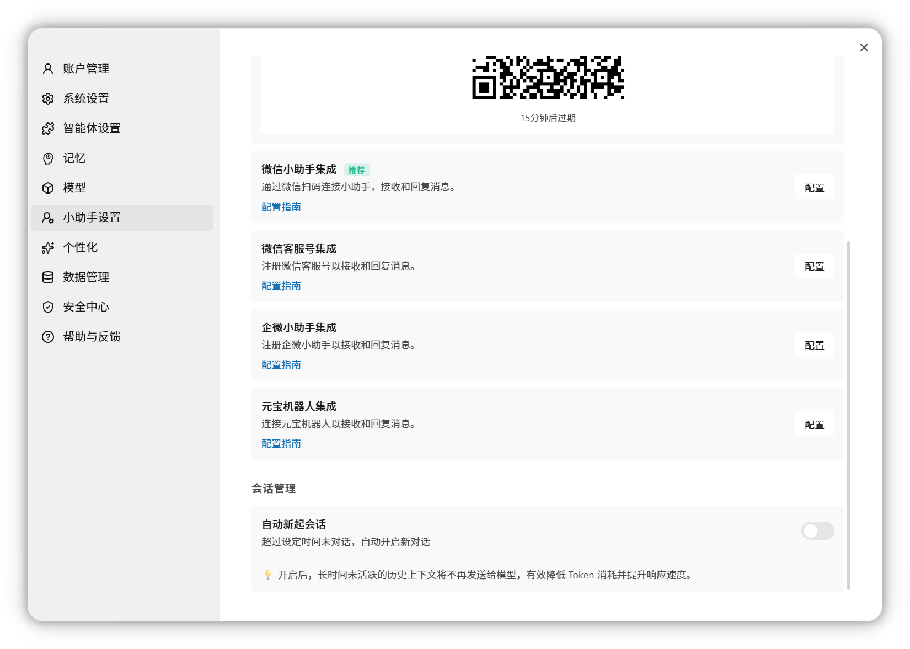

助理（远程任务）
助理是 WorkBuddy 的远程控制功能，让您可以通过手机上的即时通讯软件（微信、企业微信、QQ、钉钉、飞书）远程控制电脑上的 WorkBuddy 执行任务。
一、什么是助理
简单来说，助理就像一个遥控器：
- 在手机上发一条消息
- 电脑上的 WorkBuddy 就会自动执行任务
- 执行完成后，结果会回复到您的手机上
这意味着您不需要坐在电脑前，也能让 WorkBuddy 帮您处理工作。

二、支持的平台
助理支持国内主流的即时通讯平台：
| 平台 | 接入指南 |
|---|---|
| 微信助理（推荐） | 查看指南 |
| 微信客服号 | 查看指南 |
| 企微助理 | 查看指南 |
| QQ 机器人 | 查看指南 |
| 元宝机器人 | 查看指南 |
| 飞书 | 查看指南 |
| 钉钉机器人 | 查看指南 |
三、使用场景
- 出门在外：用手机让电脑上的 WorkBuddy 处理文件
- 会议中：快速让 WorkBuddy 生成会议纪要
- 通勤路上：提前安排 WorkBuddy 准备工作材料
- 临时需求：随时随地发送任务，回来查看结果
四、功能说明
助理页面可查看远程任务的完整执行记录，包括思考过程、操作步骤、生成文件及最终结果。
远程任务与普通任务的区别
| 对比项 | 普通任务 | 助理 |
|---|---|---|
| 工作目录 | 自由指定 | 固定使用助理专属文件夹 |
| 新建对话 | 支持多个并行任务 | 仅一个会话，所有远程指令集中处理 |
| 上下文管理 | 可清空历史重新开始 | 保留完整对话历史，不可清空 |
建议
本地操作优先使用主界面的普通任务；需要远程触发或统一查看记录时，再使用助理。
五、配置方式
打开 WorkBuddy，点击左下角头像，打开 设置 → 助理设置；

按需配置对应平台的集成接入（微信/企业微信/QQ/钉钉/飞书）。

按照提示完成配置。
六、平台接入指南
WorkBuddy 支持多个国内主流即时通讯平台的接入，请参考以下详细指南：
| 平台 | 接入指南 |
|---|---|
| 微信助理 | 微信助理Bot 接入指南（推荐） |
| 微信客服号 | 微信服务号接入指南 |
| 企微助理 | WorkBuddy 接入企业微信指南 |
| QQ 机器人 | WorkBuddy 接入 QQ 指南 |
| 元宝机器人 | WorkBuddy 接入元宝派指南 |
| 飞书 | WorkBuddy 接入飞书指南 |
| 钉钉机器人 | WorkBuddy 接入钉钉指南 |
每个指南都包含了从创建应用、配置权限到完成接入的完整步骤和截图说明。
七、注意事项
- 使用助理时，电脑需要保持开机并运行 WorkBuddy
- 确保网络连接正常
- 不同平台的接入方式不同，微信客服号支持直接扫码绑定
- 企业微信、QQ、飞书、钉钉通常需要先在对应平台完成应用或机器人配置
远程控制安全边界
- 绑定身份： 在助理设置中配置关联的账号，支持灵活换绑不同移动端平台
- 来源校验： WorkBuddy 助理对每一条远程指令执行多层来源校验
- 高风险任务确认： 涉及文件删除、系统配置修改、批准命令执行等操作需确认后方可执行
八、解绑助理
解绑将移除该平台与当前 WorkBuddy 的绑定关系。解绑后如需再次使用，需要重新完成接入配置。
操作步骤
- 打开 WorkBuddy，点击左下角头像，打开 设置 → 助理设置；
- 在列表中找到目标平台，点击卡片右侧的解绑按钮
解绑后的影响
- 该平台账号不再能向此 WorkBuddy 发送远程任务指令
- 该平台的接入配置将从本地删除
- 该平台侧的机器人/应用仍然存在，但消息不会被 WorkBuddy 接收
- 已执行任务的历史记录保留在本地，不会因解绑而清除
- 其他已绑定平台的功能不受影响